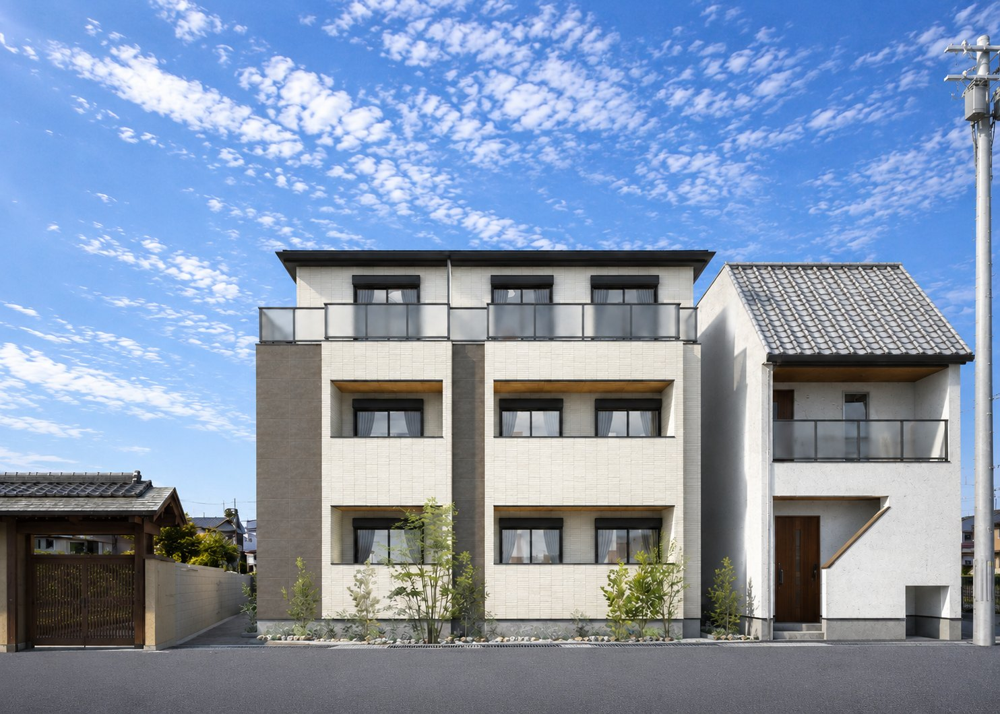
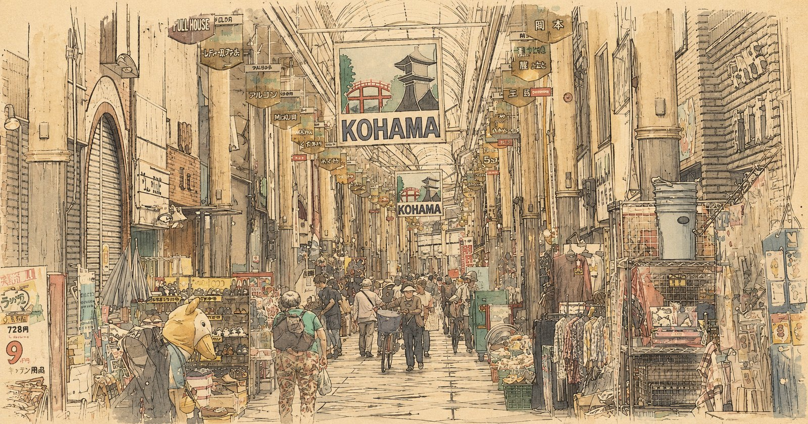
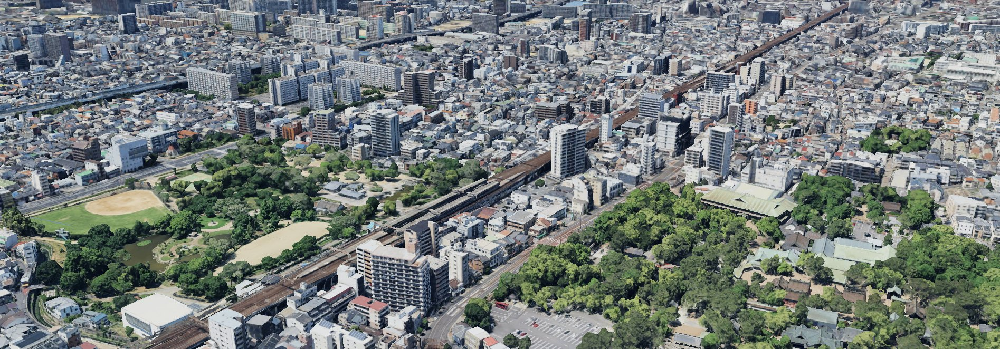
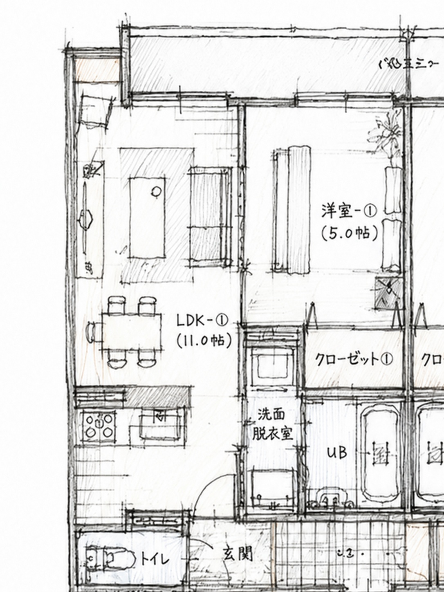
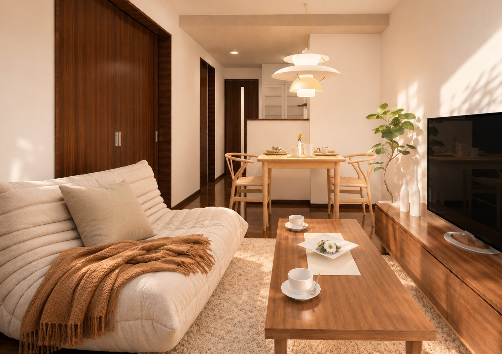
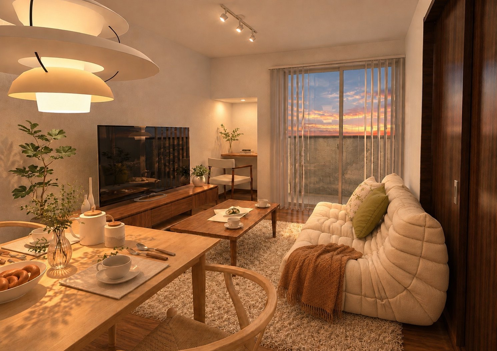
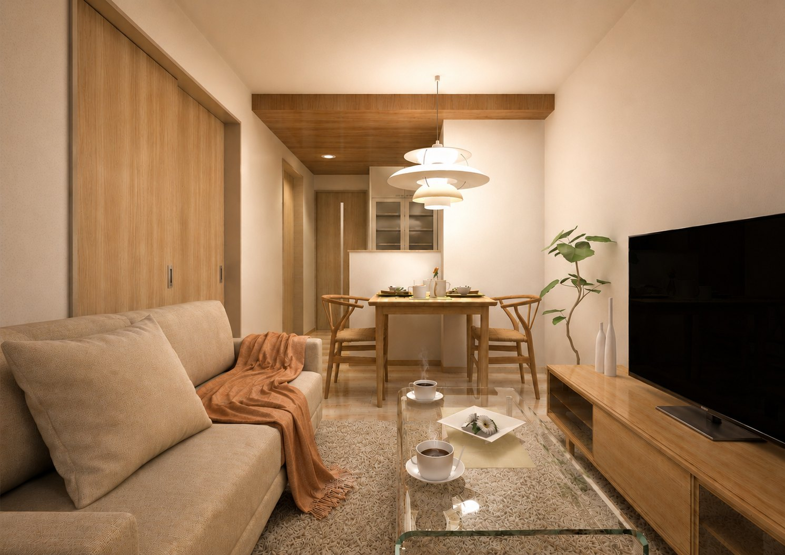
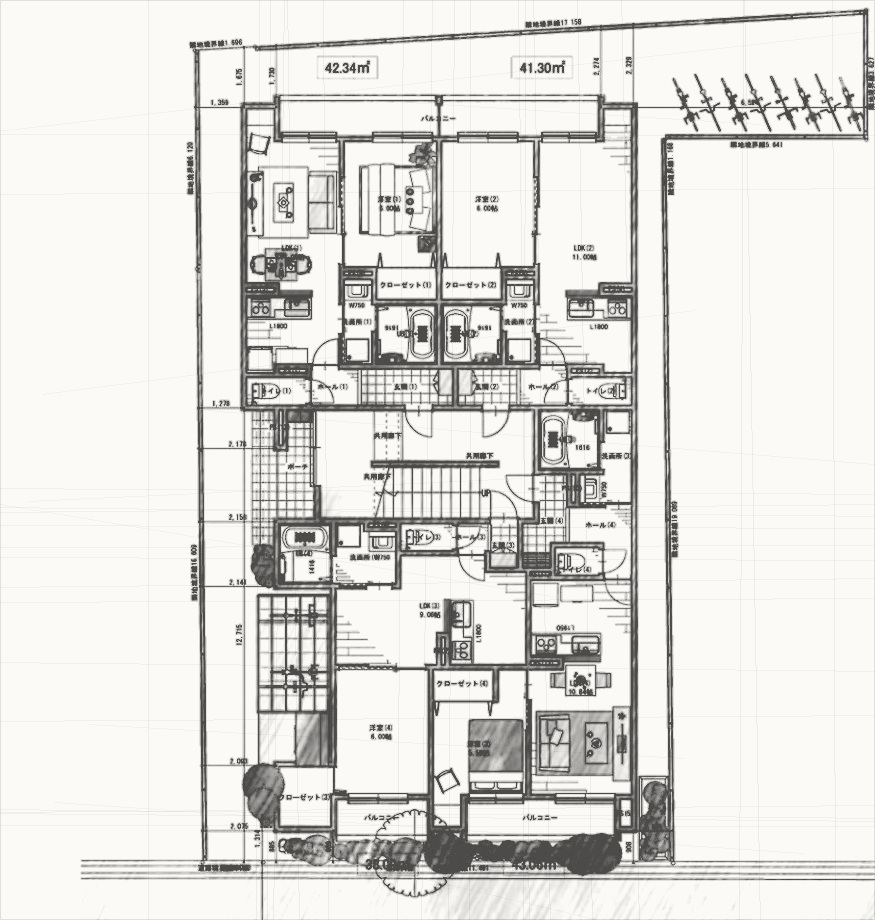

PRIVATE RESIDENCE PROPOSAL
人の流れに、
暮らしを結ぶ。
古くから人が行き交い、暮らしが積み重なってきた粉浜。
その街の流れに寄り添いながら、これからの暮らしを結ぶ住まいを提案いたします。
CONCEPT
忙しい毎日を支え、
心地よく整える住まい。
この街の流れに結ばれた場所で、自分らしい暮らしがはじまります。 難波方面への高いアクセス性を活かしながら、落ち着いた街並みに調和する住環境を整えます。
複数住戸にテレワークスペースを確保し、働く時間とくつろぐ時間が自然に切り替わる、 これからの暮らし方に寄り添う1LDKレジデンスです。
Target

ARCHITECTURE
街に馴染み、
記憶に残る佇まい。
3階建のボリュームを端正に整え、白を基調とした外壁と落ち着いたアクセントで、 日常に溶け込む上質な表情をつくります。
- 明るい外壁と落ち着いたアクセント
- 植栽によるやわらかな街並み形成
- 夕景・夜景でも印象に残る外構演出
LOCAL VALUE
都市をつなぐ、
心地よい距離感。
南海本線「住吉大社」駅徒歩5分。なんば・新今宮方面へ軽快につながりながら、 古くからの商店街や生活利便が身近にある粉浜らしい暮らしを描きます。


PLAN & LIFE
暮らし方に合わせて、
選べる1LDK。
38㎡台から43㎡台まで、8タイプの1LDKを計画。 社会人単身層からカップル・新婚世帯まで、幅広い入居者ニーズに対応します。

INTERIOR MOOD
帰る時間が、
楽しみになる。
木質感とやわらかな光を基調に、コンパクトでありながら居場所の豊かさを感じられる室内へ。 仕事終わりの時間にも、休日の朝にも、自然に心が整う空間を目指します。



FOR DAILY LIFE
毎日を支える設備計画。
宅配ボックス
防犯カメラ
インターネット
オートロック
WORK & PRIVATE
仕事も、暮らしも、
無理なく整える。
テレワーク需要を見据えた住戸計画により、 入居者様の「働く」「休む」「暮らす」が自然に切り替わる住まいを提案します。
PROJECT DATA
計画概要
- 計画地
- 大阪市住之江区粉浜3丁目
- 立地
- 南海本線「住吉大社」駅 徒歩5分
- 敷地面積
- 約325㎡（約98坪）
- 用途地域
- 第1種住居専用地域
- 防火地域
- 準防火地域
- 建ぺい率 / 容積率
- 80％ / 200％
- 規模
- 3階建 1棟12世帯 共同住宅
- 間取り
- 1LDK
AREA DATA
面積計画
- 建築面積
- 192.96㎡（58.37坪）
- 1階床面積
- 184.30㎡（55.75坪）
- 2階床面積
- 188.59㎡（57.04坪）
- 3階床面積
- 183.63㎡（55.54坪）
- 延床面積
- 556.52㎡（168.33坪）
- 施工床面積
- 622.62㎡（188.34㎡）
- レンタブル比
- 89.46％
- 住戸面積
- 38.09㎡〜43.06㎡

MOBILE PROPOSAL
スマートフォンでも
提案内容をご覧いただけます。
QRコードから、本計画の提案内容をご確認いただけます。